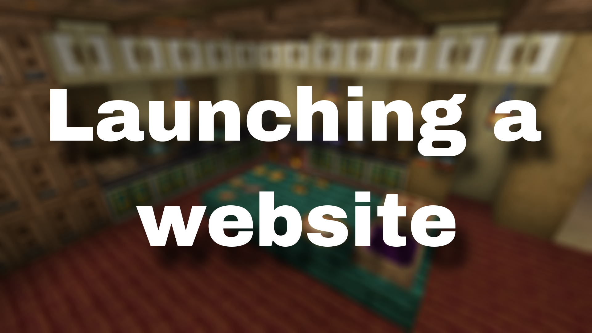

<!DOCTYPE html>
<html lang="en">
<head>
  <link rel="icon" href="../img/themes/active/favicon.png">
  <title>Launching a website | Blog | Donne431</title>
  <meta name="viewport" content="width=device-width, initial-scale=1, maximum-scale=1" />
  <meta name="title" content="Launching a website | Blog | Donne431">
  <meta name="description" content="Welcome to my website! I am Donne431, just a guy, who love made a modifications for games. I'm 16 years old, and I'm from Crimea, Russia (demi-island washed by the Black and Azov Sea). I also like to create almost any content for Minecraft, that is: mods, maps, resource packs, servers.">
  <meta name="keywords" content="Minecraft, Forts, Mods, Resourcepacks, Datapacks, Donne431">
  <meta name="theme-color" content="#4bb4f1">


  <script src="https://code.jquery.com/jquery-3.3.1.min.js"></script>
  <script src="https://cdn.jsdelivr.net/npm/handlebars@latest/dist/handlebars.js"></script>
  <script src="https://mcapi.us/scripts/minecraft.min.js"></script>
  <script src="../js/main.js"></script>
  <script src="../js/lang.js"></script>
  <script src="../config.js"></script>
  <script src="../js/lightbox.min.js"></script>

  <script>tosAgreed = true</script>

  <link rel="stylesheet" href="https://cdnjs.cloudflare.com/ajax/libs/font-awesome/6.7.1/css/all.min.css"/>
  <link rel="stylesheet" href="../css/style.css">
  <link rel="stylesheet" href="../css/blog.css">
  <link rel="stylesheet" href="../config.css">
  <link href="../css/lightbox.css" rel="stylesheet" media="all">

</head>


<body>

  <div id="target"></div>

  <script id="template" type="text/x-handlebars-template">

  <header>
    <div class="hero" id="hero">
      <a><h1 style="padding-top: 3%;"></h1></a>
    <p> </p>
    <div class="news-card" align="center">
      <a href="../" class="btn"><i class="fa-solid fa-house"></i> Home</a>
      <a href="../blog" class="btn"><i class="fa-solid fa-newspaper"></i> Blog</a>
      <a href="#links" class="btn" data-translate-key="universal.links"><i class="fa-solid fa-share"></i> Links</a>
    </div>
    <p> </p>
    </div>
  </header>

  <section class="dark" id="blog">
    <h1><i class="fa-solid fa-newspaper"></i> Blog</h1>
    <div id="news">
    <div class="news-card" align="center">
    <a>UPDATES</a><br>
    <a href="../img/blog/launching-a-website/preview.png" data-lightbox="roadtrip"></a>
    <h1 align="center">Launching a website</h1>
    <i>05.02.2025, 18:00</i><br>
    </div>
    <p>
    Hello to all the readers of this post!<br><br>
    Finally, i made own website! But this did not happen if this <a href="https://momentariymodder.github.io/" style="color:#00f44b">site (created by MomentariyModder)</a> hadn't open source code! <br><br>
    At the moment, the site is semi -empty, but I'm going to fix it over time! Do not think that it will be fast, but still I will try to do as quickly as possible. <br><br>
There was only one question left: why did I create a website? The answer is quite simple and for greater clarity, I will distribute it by points: <br><br>
1. A simple desire from childhood to create your own site: no matter how stupid it sounds, but one of the reasons is just a childish dream. <br>
2. Convenient use: agree to use the site will be many times more pleasant than some kind of discord server. If you want to go to the blog, want to be on the wiki. <br>
3. Beauty: as I said in the point above, it will be many times more pleasant to use the site than a discord server, because at least in the same blogs I can insert an image to any place, unlike a discord. With these words, I am not trying to say that the Discord Fine, I am just trying to say that the discord does not fit for Vika or blog. <br>
4. Ease of use: unlike the same discord on this website, there is no need for registration, that is, you can watch all the content of the site from any device without the need to remember the password from the account. Also, unlike the discord, you will not need to go to some channels to get a role, then watch the news about mods, here you can simply immediately go to the desired page and that’s it. <br>
    <!--
    На данный момент сайт полупустой, но я собираюсь со временем это исправлять! Не думайте, что это будет быстро, но всё же я постараюсь сделать как можно быстрее. <br><br>
    Остался лишь один вопрос: Зачем я создал вебсайт? Ответ довольно прост и для большей наглядности я его распределю по пунктам: <br><br>
    1. Простое желание с детства создать свой сайт: Как бы это не звучало глупо, но одна из причин это просто детская мечта. <br>
    2. Удобное пользование: Согласитесь пользоваться сайтом будет в разы приятнее, чем каким-то дискорд сервером. Хочешь заходи на блог, хочешь на вики. <br>
    3. Красота: Как я и говорил в пункте выше, пользоваться сайтом будет в разы приятнее, чем дискорд сервером, ведь как минимум в тех же блогах я могу вставлять изображение в любое место, в отличие от дискорда. Этими словами я не пытаюсь сказать, что дискорд фигня, я лишь пытаюсь сказать, что для вики или блога дискорд не подходит. <br>
    4. Простота использования: В отличие от того же дискорда на данном вебсайте нет необходимости в регистрации, то есть вы можете смотреть весь контент сайта с любого устройства без необходимости вспоминать пароль от аккаунта. Также в отличие от дискорда вам не надо будет заходить на какие-то каналы, чтобы получить роль, чтобы затем просматривать новости о модах, здесь вы можете просто сразу зайти на нужную страницу и всё. <br>
    -->
    </p>
    <p align="center"><i class="fa-solid fa-user"></i> Donne431 (Author)</p>
    </div>
  </section>
  <section class="dark">
    <div class="news-card" align="center">
    <!-- <a href="../blog/cmd-3.10.0-6.0.0" class="btn2"><i class="fa-solid fa-arrow-left"></i> Previous post</a> -->
    <a href="../blog" class="btn2"><i class="fa-solid fa-newspaper"></i> Back to Blog</a>
    <a href="../blog/iafd-spoilers.html" class="btn2"><i class="fa-solid fa-arrow-right"></i> Next post</a
    </div>
  </section>

  <section class="light">
    <h1 data-translate-key="universal.links"><i class="fa-solid fa-share"></i> Links</h1>
    <div id="links" align="center">
      <a href="https://discord.gg/NQBhQRDEhF"></a>
      <a href="https://www.curseforge.com/members/donne431/projects"></a>
      <a href="https://modrinth.com/user/Donne431"></a>
      <a href="https://github.com/Donne431"></a>
      <a href="https://www.donationalerts.com/r/donne431"></a>
    </div>
  </section>

  <footer>
    <a>&copy; {{server_port}} {{server_name}}. All Rights Reserved.</br>{{server_name}} is not affiliated with or endorsed by Mojang Studios or Microsoft<br>{{server_ip}}</a>
    <a></a>
    
  </footer>
  </script>
  <script src="../js/license.js"></script>

</body>
</html>
